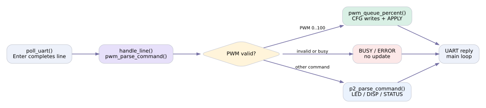

완성 후 동작
기존 SoC의 UART 문자열 명령을 유지하면서 LED1만 전용 PWM(피더블유엠, 펄스 폭 변조) 출력으로 추가합니다. MicroBlaze V는 Duty 값을 레지스터에 기록하고, 실제 주기 카운터는 FPGA RTL에서 독립적으로 실행합니다.
| 명령 | LED1 / FND / LED0 | UART 응답 |
|---|---|---|
PWM 0 | LED1 소등·기본 극성 | OK PWM 0 QUEUED |
PWM 50 | LED1 약 50% Duty·약 중간 밝기 | OK PWM 50 QUEUED |
PWM 100 | LED1 지속 HIGH | OK PWM 100 QUEUED |
STATUS | 이전 LED·FND·버튼 상태와 PWM 추가 | PWM_SET, PWM_ACTIVE, PWM_PENDING 포함 |
LED ON / LED OFF | LED0, P2-01 사용자 IP | 이전 동작 유지 |
DISP 1234 / DISP 0050 / DISP OFF | 기존 4자리 FND | 이전 동작 유지 |
QUEUED는 설정 요청을 적재했다는 뜻입니다. 실제 PWM 활성값은 다음 주기 경계에서 갱신됩니다. PWM_PENDING=0 및 활성 Duty를 확인합니다.CPU·AXI·PWM Core 역할

명령 수신은 C 애플리케이션의 poll_uart() 및 handle_line()에서 이루어집니다. pwm_queue_percent()가 AXI 레지스터에 설정값을 기록하면 pwm_core가 새로운 주기 경계에서 활성값을 교체합니다.
PWM 주파수와 Duty 관계
PWM(피더블유엠, Pulse Width Modulation, 펄스 폭 변조)은 주기마다 HIGH 구간 비율을 변경하여 평균 전력과 LED의 체감 밝기를 조절합니다. 이 과제에서는 Counter 기반 PWM을 사용하고 CPU가 파형을 직접 만들어 내지 않습니다.
| 항목 | 설정·수식 | 실제 의미 (AXI CLK = 100 MHz) |
|---|---|---|
PERIOD_CFG | 100000 | 100,000 clock count / 100 MHz → 1 ms = 1 kHz |
PWM 0 | Duty 0 | HIGH count 0 / 100,000 |
PWM 25 | Duty 25,000 | HIGH count 25,000 / 100,000 |
PWM 50 | Duty 50,000 | HIGH count 50,000 / 100,000 |
PWM 100 | Duty 100,000 | HIGH count 100,000 / 100,000 |
S00_AXI_ACLK가 100 MHz임을 확인하기 전에는 1 kHz를 실측 사실로 쓰지 않습니다.8개 레지스터 · 32-bit AXI4-Lite
| Offset | 이름 | 접근 | 의미 / bit 필드 |
|---|---|---|---|
0x00 | PERIOD_CFG | RW | 요청 주기 count, 최소 2 |
0x04 | DUTY_CFG | RW | 요청 HIGH count, 0 이상 PERIOD 이하 |
0x08 | CONTROL_CFG | RW | bit0 Enable, bit1 Polarity |
0x0C | APPLY | WO action | bit0=1 쓰기 → Shadow 예약, 잘못된 설정은 SLVERR |
0x10 | STATUS | RO | bit0 Pending, bit8 Active Enable, bit9 Active Polarity |
0x14 | ACTIVE_PERIOD | RO | 주기 경계에서 적용된 주기 count |
0x18 | ACTIVE_DUTY | RO | 주기 경계에서 적용된 HIGH count |
0x1C | ID | RO | 0x00040001 · 교육용 식별자 |
RW(읽기/쓰기), RO(읽기 전용), WO(쓰기 동작). 모든 offset은 32-bit 레지스터의 바이트 주소입니다. 실제 Base Address는 Vivado Address Editor에서 결정합니다.
// PWM 50: period=100000, duty=50000, enable=1
Xil_Out32(P2_04_PWM_BASEADDR + PWM_PERIOD_CFG, 100000U);
Xil_Out32(P2_04_PWM_BASEADDR + PWM_DUTY_CFG, 50000U);
Xil_Out32(P2_04_PWM_BASEADDR + PWM_CTRL_CFG, 1U);
Xil_Out32(P2_04_PWM_BASEADDR + PWM_APPLY, 1U);
// 다음 주기 경계에서 ACTIVE_PERIOD/ACTIVE_DUTY 변경잘못된 DUTY_CFG > PERIOD_CFG 상태에서 APPLY를 실행하면 AXI BRESP=SLVERR가 나옵니다. Xil_Out32는 성공/실패 코드를 반환하지 않으므로 정상 C 명령에서는 잘못된 수치가 발생하지 않도록 사전에 계산합니다.
LED 출력 소유권과 01~03장 기능
| 보드 출력 | 04장 최종 소유 모듈 | 유지 조건 |
|---|---|---|
led[0] U16 | P2-01 AXI LED IP (p2_led0) | LED ON / OFF 유지 |
led[1] E19 | P2-04 PWM IP (pwm_led1) | 기존 GPIO bit1 물리 출력에서 분리 |
led[15:2] | 기존 GPIO (gpio_led[15:2]) | LED14/15 GPIO 배선 유지 · C 표시 기능은 09장 통합 대상 |
seg/an/dp | P2-02 FND | 자리별 천·백·십·일 유지 |
btnU/D/L/R | P2-03 이벤트 Core | Short/Long + IRQ 유지 |
btnC | 원본 시스템 Reset | 이벤트 입력에 재사용 금지 |
assign led = {gpio_led[15:2], pwm_led1, p2_led0};문자열 명령 플로우차트


pwm_parse_command()는 PWM 0부터 PWM 100까지만 허용합니다. PWM 050, PWM 101, PWM -1 등은 오류입니다. 대문자·공백·Enter 입력을 기존 03장 UART 루프와 동일하게 처리합니다.
03장 복제 프로젝트로 04장 독립 생성
01~03장에 작성된 설계를 단계적으로 확인한 뒤 PWM IP를 추가한다.
Vivado → File → Project → Save As를 선택한다. ~/soc/hw/soc_ip_design_04/에 soc_ip_design_04.xpr로 저장한다. 전제: 03장 프로젝트를 완료한 뒤 복제한다.
File → Project Summary에 새 프로젝트 경로가 표시되는지 확인한다. 제1부 원본과 01~03장의 XPR은 변경하지 않는다.
이 단계가 필요한 이유: 프로젝트 복제는 기준 원본을 보존하면서 장별 변경을 분리한다.
기존 인터페이스·LED 출력 소유권 확인
LED1이 현재 led_tri_o[1]에서 출력된다는 사실을 인식한다.
Sources → Design Sources에서 사용자 Top basys3_soc11_top.v과 soc11_integration.bd를 확인한다. led_tri_o[15:0]·p2_led_o·fnd_*·btnU/D/L/R 항목이 실제 Wrapper에 존재하는지 확인한다.
기존 03장 Top의 assign led = {gpio_led[15:1], ip_led0};를 기록한다. 04장의 led[1]에는 중복 드라이버가 있어서는 안 된다.
이 단계가 필요한 이유: 분리하지 않으면 기존 GPIO와 PWM이 LED1을 동시에 구동한다.
PWM 이론과 주파수 계산 확인
PWM(펄스 폭 변조)의 주기와 ON 비율을 코드 값으로 연결한다.
아래 계산표를 읽고 100 MHz ÷ 100,000 counts = 1,000 Hz를 확인한다. 실제 s00_axi_aclk가 100 MHz인지 BD Clock에 표시된 값을 확인한다.
100 MHz인 경우 0%는 0 count, 50%는 50,000 count, 100%는 100,000 count다. 실제 클록이 다르면 PWM_PERIOD_TICKS와 RTL 기본 주기 설정을 조정한다.
이 단계가 필요한 이유: 주기 계산이 틀리면 밝기뿐 아니라 PWM 주파수 자체가 바뀐다.
재사용 가능한 pwm_core.v 구조 확인
RTL에서 클록 기반 카운터를 독립 모듈로 구현한다.
rtl/pwm_core.v를 읽는다. counter, active_duty, active_period, pending, cfg_apply의 관계를 확인한다.
요청 값은 shadow_*에 보관되며, 실제 PWM 출력 설정은 다음 주기 경계에서만 적용된다. Reset과 disable에서는 출력이 LOW다.
이 단계가 필요한 이유: C에서 펄스 시간을 반복 계산하지 않고, FPGA 회로가 독립적으로 지속 출력한다.
Vivado에서 새 AXI4-Lite IP 생성
CPU의 레지스터 쓰기와 RTL 설정을 연결하는 사용자 IP를 만든다.
Tools → Create and Package New IP → Create a new AXI4 peripheral 선택. 이름 p2_04_axi_pwm, 저장 위치 soc_ip_design_04/ip_repo/, 인터페이스 S00_AXI, AXI4-Lite, Data Width 32, 초기 Registers 16로 생성한다. 생성된 주소 폭이 6비트·슬레이브 영역 64바이트인지 확인하고 최종 8개 레지스터만 제공 RTL로 구현한다.
새 IP 폴더와 p2_04_axi_pwm_v1_0.v, p2_04_axi_pwm_v1_0_S00_AXI.v가 나타난다. 생성된 실제 템플릿 포트·파라미터를 먼저 대조한다.
이 단계가 필요한 이유: Vivado가 만든 AXI 메타데이터와 사용자 로직을 구분해야 한다. 자동 생성 포트를 임의로 가정하지 않는다.
IP Packager의 RTL을 완성 코드로 연결
AXI write/read와 PWM core의 실제 레지스터 동작을 구현한다.
IP Packager에서 생성한 두 Verilog 파일의 대응 부분을 IP Top, AXI Slave의 전체 코드와 대조한다. pwm_core.v를 소스 목록에 Add Files 한다. 32-bit Data, 최소 6-bit Address, Slave 포트 S00_AXI를 유지한다.
pwm_led_o 출력이 IP Top에 나타난다. PERIOD_CFG, DUTY_CFG, CONTROL_CFG, APPLY를 기록한 뒤 STATUS, ACTIVE_*를 읽을 수 있는 구조다.
이 단계가 필요한 이유: 자동 생성 AXI 샘플의 slv_reg0~3을 무작정 유지하면 제공 코드의 레지스터 맵과 충돌한다.
독립 PWM Core 테스트벤치 검토
시뮬레이터에서 출력 Duty와 주기 경계 갱신을 확인한다.
테스트벤치 tests/tb_pwm_core.v의 RESET, 0%, 50%, 100%, polarity, disable, mid-cycle 항목을 확인한다. 추후 Vivado Simulation Sources → Add Sources에 추가하고 Run Behavioral Simulation을 실행한다.
Reset, Duty, 극성, 주기 경계 출력이 기대값과 일치하는지 확인한다.
이 단계가 필요한 이유: 단언과 파형을 함께 확인한다.
AXI4-Lite 프로토콜 독립 시험
읽기·쓰기 신호의 독립성 및 오류 응답을 확인한다.
tb_p2_04_axi_pwm.v를 Simulation Sources에 추가한다. AW/W 도착 순서 뒤바뀜, WSTRB byte mask, BVALID/RVALID backpressure, 범위 밖 APPLY, 잘못된 주소, 0%/100% 출력을 시험한다.
BRESP=2 (SLVERR)는 잘못된 Duty에 대한 예상 오류 응답이다.
이 단계가 필요한 이유: AXI 쓰기 주소·데이터는 같은 사이클에 도착한다는 보장이 없다.
IP 패키지 구성 및 Repository 갱신
사용자 IP가 BD에서 정상 인식되도록 File Groups와 포트를 확인한다.
IP Packager File Groups에서 pwm_core.v가 Synth/Sim 대상인지 확인하고, Ports and Interfaces에서 pwm_led_o를 검토한다. Review and Package → Re-Package IP 실행. BD Tools → Settings → IP → Repository 경로 확인 후 Refresh IP Catalog.
IP Catalog에 p2_04_axi_pwm가 나타나며 최종 사용 RTL이 최신인 것을 확인한다. Report IP Status에서 변경 버전과 Lock 상태를 확인한다.
이 단계가 필요한 이유: RTL 파일만 수정하고 Re-Package하지 않으면 BD에서 오래된 HDL을 참조할 수 있다.
Block Design에 사용자 PWM IP 추가
기존 AXI GPIO/Timer/UART/INTC/LED/FND/버튼 IP를 유지한다.
Sources → soc11_integration.bd → Open Block Design. Add IP에서 p2_04_axi_pwm 삽입. Run Connection Automation으로 S00_AXI를 CPU AXI Master 경로에 연결한다. s00_axi_aclk와 s00_axi_aresetn을 기존 AXI 클록·리셋 도메인에 연결한다.
새 IP의 S00_AXI가 Interconnect에 연결되고 Clock/Reset 관련 Validation 경고가 없는지 확인한다. 기존 INTC에 **새 PWM IRQ는 추가하지 않는다**.
이 단계가 필요한 이유: 이번 PWM은 설정 레지스터만 사용하며 별도 인터럽트가 필요 없다.
PWM 출력 포트 외부화와 Wrapper 재생성
신규 PWM 출력만 사용자 Top까지 전달한다.
BD의 pwm_led_o를 Make External로 내보내고 외부 포트를 pwm_led1로 변경한다. Validate Design 후 Generate Output Products를 실행한다. Create HDL Wrapper는 Vivado 자동 관리로 재생성한다.
자동 생성된 soc11_integration_wrapper.v의 출력에 pwm_led1이 있는지 실제 선언부를 확인한다. 없으면 사용자 Top을 먼저 수정하지 않는다.
이 단계가 필요한 이유: BD 밖에서 연결하려면 해당 포트가 자동 Wrapper 선언에 실제 존재해야 한다.
사용자 Top에서 LED1 소유권 분리
LED0·LED1·LED2~15 각각 하나의 모듈만 출력한다.
04장 Top 전체 소스를 Vivado 복제 프로젝트의 사용자 Top에 반영한다. assign led = {gpio_led[15:2], pwm_led1, p2_led0};는 단순 신호 연결이며 기능 로직을 넣지 않는다.
led[0]는 01장 IP, led[1]는 PWM, led[15:2]는 기존 GPIO에 연결된다. LED14/15의 기존 GPIO 배선은 유지하지만, 이 장 C 프로그램에는 UART 표시·Timer heartbeat 처리가 없다.
이 단계가 필요한 이유: 기존 LED0 전용 사용자 AXI IP와 신규 PWM IP는 서로 다른 보드 출력이어야 한다.
XDC 핀·Clock·Address Editor 대조
기존 모든 핀을 유지하면서 신규 LED1에 중복 제약이 없도록 한다.
Constraints에서 기존 Master XDC led[1]이 E19 / LVCMOS33에 한 번만 지정되는지 검사한다. 참고용 XDC는 복사 제약이 아니라 중복 방지 안내다. Address Editor에서 04장 PWM IP의 실제 Base Address를 기록한다. Clock Wizard/BD Clock frequency 대조.
전체 주소 충돌이 없고 출력 핀 명칭이 led[1]인지 확인한다. 신규 base address는 예제 수치로 확정하지 않는다.
이 단계가 필요한 이유: XDC 중복, 클록 주기 불일치, AXI 주소 중복은 실물에서 흔한 오류 원인이다.
Validate → Synthesis → Implementation → XSA
실제 동작할 구성 파일을 생성하고 타이밍을 확인한다.
Validate Design → Run Synthesis → Run Implementation → Generate Bitstream → File → Export → Export Hardware에서 Include Bitstream을 검토한다. 이 전에 IP Output Products 최신 여부 확인. WNS/TNS, DRC, Clock 중복 Critical Warning 확인.
새 Top 및 PWM 포트가 Synthesis/Implementation에 반영되고 실제 Address Map이 XSA에 포함되어야 한다. 경고가 남아 있으면 완료라고 기록하지 않는다.
이 단계가 필요한 이유: C BSP는 새 XSA의 주소 정보를 반영해야 레지스터에 정확히 접근한다.
Vitis 플랫폼 갱신·C 소스 적용
기존 명령 처리를 유지한 채 PWM 0..100만 추가한다.
새 XSA를 반영한 Platform을 만들거나 갱신한다. xparameters.h에서 P2-01~04 주소와 03장 버튼 IRQ ID/Parent를 실제 값으로 확인한다. main_p2_04.c, p2_04_pwm_logic.c/.h, 기존 p2_03_logic.c/.h를 Application Sources에 추가한다. 필요한 매크로는 프로젝트의 Build Settings에서 정의하거나 확인된 헤더로 별도 관리한다.
주소가 비어 있거나 중복이면 #error로 빌드가 차단된다. 새 IP ID는 0x00040001이며 UART의 기존 LED·DISP·STATUS·버튼 처리는 유지된다.
이 단계가 필요한 이유: P2-03의 인터럽트 API는 실제 BSP SDT 설정과 대조해야 한다.
UART 명령으로 밝기 변경
PC 터미널에서 문자열 입력 후 Enter로 LED1 Duty를 조절한다.
기존 실습에서 사용하던 UART 터미널을 115200, 8N1로 설정한다. PWM 0 → PWM 50 → PWM 100 → STATUS 순서로 입력한다. BUSY가 나오면 갱신 주기 경계가 지나간 후 재시도한다.
LED1: 0% 소등, 50% 중간 밝기, 100% 지속 점등이 목표다. OK PWM 50 QUEUED는 반영 대기이며, STATUS PWM_PENDING=0과 ACTIVE 값을 확인해야 한다.
이 단계가 필요한 이유: 명령이 수신되었다는 메시지와 실제 하드웨어 출력 적용은 다른 사건이다.
01~03장 기존 기능 확인
신규 PWM 추가가 기존 SoC 기능을 파괴하지 않았는지 확인한다.
LED ON/OFF(LED0), DISP 0050(천·백·십·일 자리), 네 방향 버튼 Short/Long, STATUS, UART/Timer/INTC를 순서대로 시험한다.
FND와 버튼 IRQ 기능 및 LED14/15 GPIO 배선을 확인한다. LED14·LED15 소프트웨어 표시 동작은 이 장에서 지원하지 않으며 09장 통합 대상이다.
이 단계가 필요한 이유: 새 기능이 작동하더라도 기존 기능에 퇴행이 있으면 장 완료가 아니다.
오류 발생 시 첫 확인 위치
| 증상 | 우선 검사 지점 | 정상 기준 |
|---|---|---|
pwm_led1 포트 없음 | BD Make External → Validate → Generate Output Products → Wrapper 재생성 | Wrapper 실제 포트 선언 |
| IP 인식 실패 | IP Packager File Groups, Re-Package, IP Repository | 최신 IP Catalog와 IP Status |
| LED1이 변하지 않음 | AXI Base/ID → STATUS Pending → ACTIVE_DUTY → GPIO 출력 분리 | P2-04 PWM 단독 출력 |
| 동작 주기가 1 kHz가 아님 | AXI Clock 속도, PERIOD_CFG, Reset | 100 MHz라면 PERIOD=100000 |
PWM 50 명령은 왔지만 출력 안 바뀜 | STATUS의 PWM_PENDING/ENABLE과 active duty | PENDING=0, DUTY=50000 |
ERROR: PWM IP identity mismatch | XSA/BSP Base Address, IP ID RTL, 인터커넥트 연결 | ID=0x00040001 |
| 버튼 이벤트 사라짐 | 03장 IP/INTC 신호, SDT IRQ ID/Parent, 03장 회귀 | 기존 이벤트 동작 |
| LED0 / FND 오류 | Top 변경 비교, 원래 IP 주소 유지 | 01/02장 명령이 정상 |